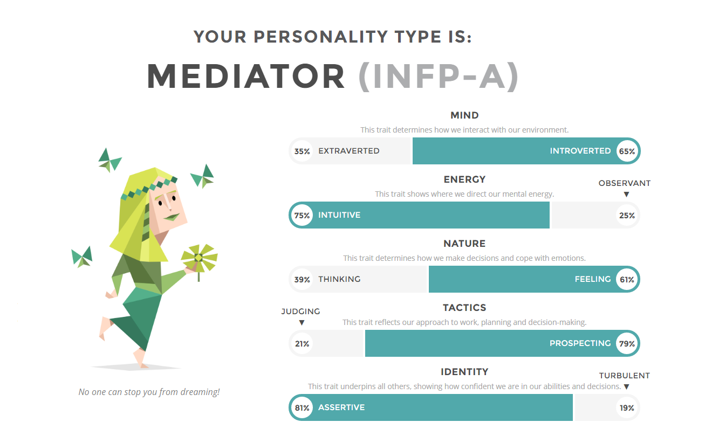

Who am I?
I dont really know how to describe myself but ill try it anyway
I watch a lot of anime and like playing games with my friends.
I also practice kobujutsu (martial arts with weapons) every wednesday.
some of the weapons i learn to use at kobujutsu training are:
- Bo
- sai
- tonfa
- nunchuck
- kama
- nunchaku
- tekko
- surujin
- tinbe and rochin
with ever new beld (rank up) you get a new weapon to learn and more of the old weapons you already had
im also really interested in swords and especially katana's and the traditional way they were and still are crafted
Below the results of my personality test
